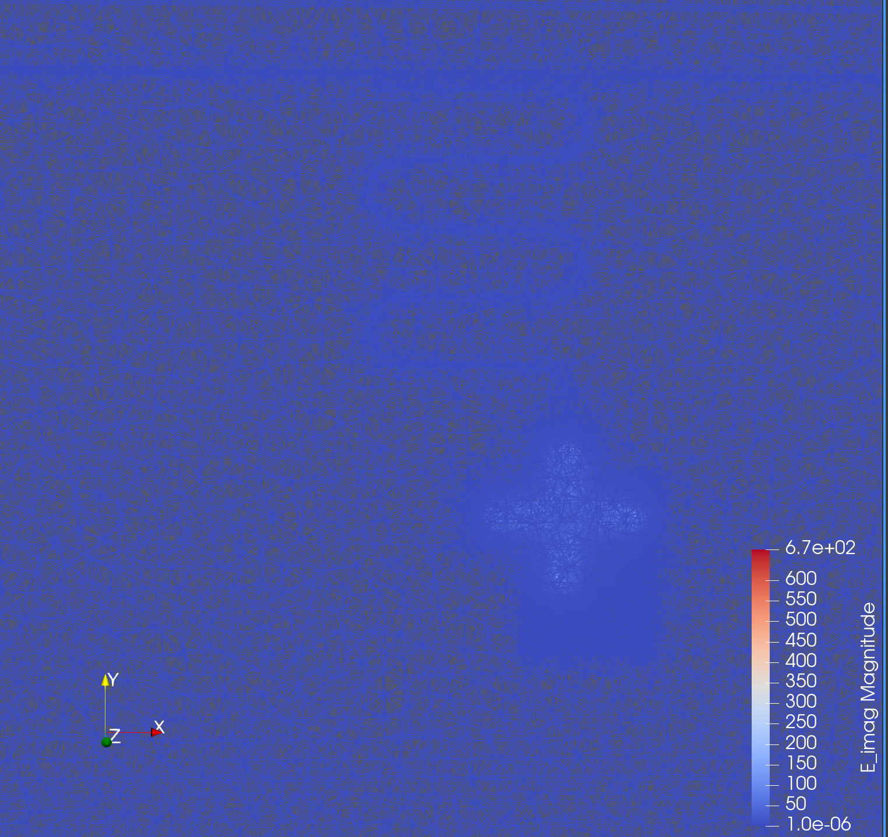
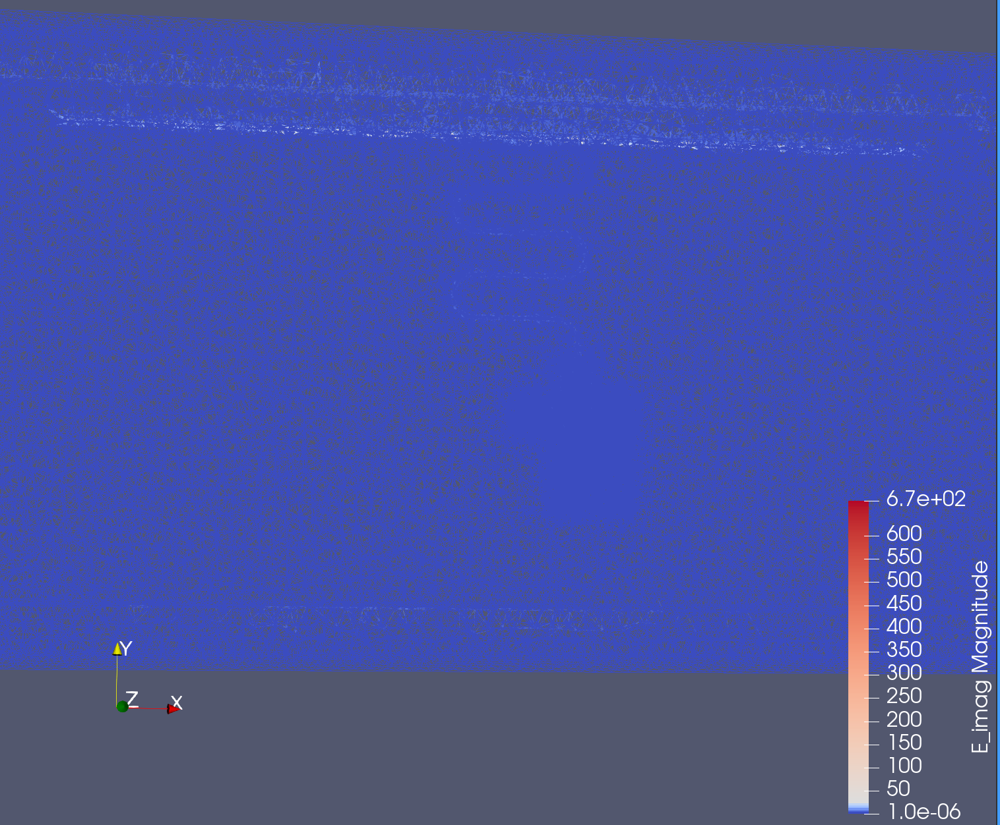
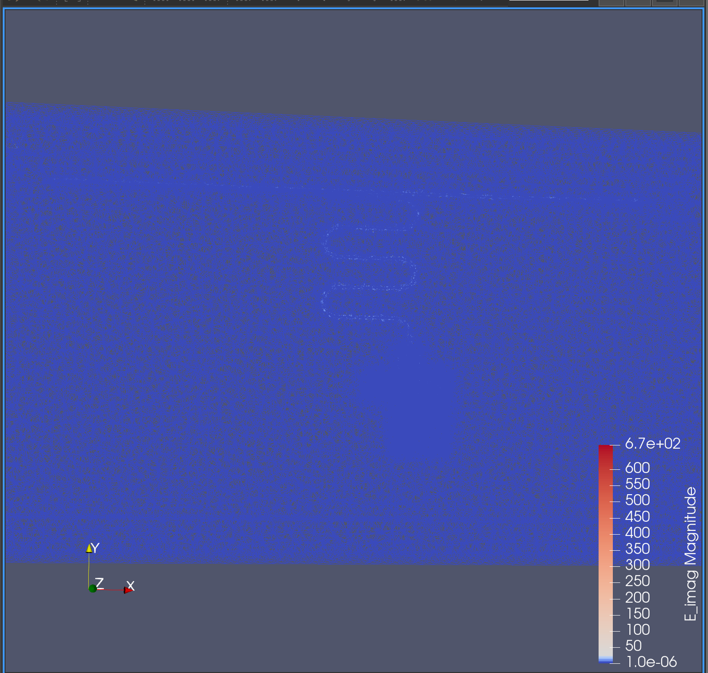

Simulating Qiskit Metal design objects with palace using SQDMetal#
In this tutorial, we will cover how to do electrostatic and eigenmode simulations of a qubit-cavity system using palace.
Requirements:
☐ Ensure that
`SQDMetal<sqdlab/SQDMetal>`__ is installed in your environment.☐ Ensure that
`palace<sqdlab/palace>`__ is installed in your environment. Instructions here.
[1]:
%load_ext autoreload
%autoreload 2
%matplotlib inline
[2]:
import os
os.environ["KMP_DUPLICATE_LIB_OK"]="TRUE"
os.environ["PMIX_MCA_gds"]="hash"
import gmsh
gmsh.initialize()
Define the path to the palace executable
[3]:
path_to_palace = 'path/to/palace'
Electrostatic Simulation#
Extracting the Capacitance Matrix#
Importing the relevant modules
[4]:
import qiskit_metal as metal
from qiskit_metal import designs, draw
from qiskit_metal import MetalGUI, Dict, open_docs
from qiskit_metal.toolbox_metal import math_and_overrides
from qiskit_metal.qlibrary.core import QComponent
from collections import OrderedDict
from qiskit_metal.qlibrary.tlines.meandered import RouteMeander
from qiskit_metal.qlibrary.tlines.straight_path import RouteStraight
from qiskit_metal.qlibrary.tlines.pathfinder import RoutePathfinder
from qiskit_metal.qlibrary.terminations.launchpad_wb import LaunchpadWirebond
from qiskit_metal.qlibrary.terminations.open_to_ground import OpenToGround
from qiskit_metal.qlibrary.terminations.short_to_ground import ShortToGround
from qiskit_metal.qlibrary.couplers.coupled_line_tee import CoupledLineTee
from qiskit_metal.qlibrary.qubits.transmon_cross import TransmonCross
import pandas as pd
We want to get the cap matrix for a system with TransmonCross, claw and ground (similar to the simulations we ran to build SQuADDS_DB)
[5]:
from squadds import SQuADDS_DB, Analyzer
[6]:
# First, get a design from SQuADDS
db = SQuADDS_DB()
db.select_system("qubit")
db.select_qubit("TransmonCross")
df = db.create_system_df()
analyzer = Analyzer(db)
# Define target parameters for your qubit
target_params = {
"qubit_frequency_GHz": 4.2, # Example value
"anharmonicity_MHz": -200 # Example value
}
# Find the closest design
results = analyzer.find_closest(target_params, num_top=1)
best_device = results.iloc[0]
# Get the design options
qubit_options = best_device["design_options"]
[7]:
# Set up chip design as planar
design = designs.DesignPlanar({}, overwrite_enabled=True)
# Create GUI
gui = MetalGUI(design)
# Qubit and a claw
# Create the TransmonCross object with the modified options
# Update only the position parameters
qubit_options["pos_x"] = '0.6075mm'
qubit_options["pos_y"] = '-1.464'
Q1 = TransmonCross(design, 'Q1', options=qubit_options)
gui.rebuild()
design.rebuild()
gui.autoscale()
gui.screenshot('sims/qubit.png')
06:04PM 28s CRITICAL [_qt_message_handler]: line: 0, func: None(), file: None WARNING: Populating font family aliases took 259 ms. Replace uses of missing font family "Courier" with one that exists to avoid this cost.
Call the SQDMetal objects. Change the hyper-parameters as needed for a more accurate simulation.
[8]:
from SQDMetal.PALACE.Capacitance_Simulation import PALACE_Capacitance_Simulation
user_defined_options = {
"mesh_refinement": 0, #refines mesh in PALACE - essetially divides every mesh element in half
"dielectric_material": "silicon", #choose dielectric material - 'silicon' or 'sapphire'
"solver_order": 1, #increasing solver order increases accuracy of simulation, but significantly increases sim time
"solver_tol": 1.0e-8, #error residual tolerance for iterative solver
"solver_maxits": 500, #number of solver iterations
"mesh_max": 120e-6, #maxiumum element size for the mesh in mm
"mesh_sampling": 150, #number of points to mesh along a geometry
"fillet_resolution":12, #number of vertices per quarter turn on a filleted path
"num_cpus": 10, #number of CPU cores to use for simulation
"palace_dir":path_to_palace
}
[9]:
#Creat the Palace Eigenmode simulation
cap_sim = PALACE_Capacitance_Simulation(name = 'xmon_cap_sim_GMSH', #name of simulation
metal_design = design, #feed in qiskit metal design
sim_parent_directory = "sims/", #choose directory where mesh file, config file and HPC batch file will be saved
mode = 'simPC', #choose simulation mode 'HPC' or 'simPC'
meshing = 'GMSH', #choose meshing 'GMSH' or 'COMSOL'
user_options = user_defined_options, #provide options chosen above
view_design_gmsh_gui = False, #view design in GMSH gui
create_files = True,
) #create mesh, config and HPC batch files
cap_sim.add_metallic(1, threshold=1e-10, fuse_threshold=1e-10)
cap_sim.add_ground_plane(threshold=1e-10)
To generate a fine mesh around our region of interest, we can use the fine_mesh_in_rectangle method by first getting the bounds of the region of interest.
[10]:
bounds = design.components["Q1"].qgeometry_bounds()
bounds
[10]:
array([ 0.3675, -1.704 , 0.9277, -1.224 ])
[11]:
#Fine-mesh the transmon cross qubit region
cap_sim.fine_mesh_in_rectangle(bounds[0]*1e-3, bounds[1]*1e-3, bounds[2]*1e-3, bounds[3]*1e-3, mesh_sampling=100, mesh_min=10e-3, mesh_max=125e-3)
[12]:
cap_sim.prepare_simulation()
You can check to see if all the metal components are correctly identified
[13]:
cap_sim.display_conductor_indices()
[13]:
Similarly, you can verify the mesh is correct by visualizing the mesh
[14]:
from SQDMetal.PALACE.Utilities.GMSH_Navigator import GMSH_Navigator
gmsh_nav = GMSH_Navigator(cap_sim.path_mesh)
gmsh_nav.open_GUI()
If all looks good, you can run the simulation
[15]:
cap_matrix =cap_sim.run()
>> /opt/homebrew/bin/mpirun -n 10 /Users/shanto/LFL/palace/build/bin/palace-arm64.bin xmon_cap_sim_GMSH.json
_____________ _______
_____ __ \____ __ /____ ____________
____ /_/ / __ ` / / __ ` / ___/ _ \
___ _____/ /_/ / / /_/ / /__/ ___/
/__/ \___,__/__/\___,__/\_____\_____/
Git changeset ID: v0.13.0-117-g748660c
Running with 10 MPI processes
Device configuration: cpu
Memory configuration: host-std
libCEED backend: /cpu/self/xsmm/blocked
Added 365 elements in 2 iterations of local bisection for under-resolved interior boundaries
Added 7772 duplicate vertices for interior boundaries in the mesh
Added 16409 duplicate boundary elements for interior boundaries in the mesh
Added 4040 boundary elements for material interfaces to the mesh
Finished partitioning mesh into 10 subdomains
Characteristic length and time scales:
L₀ = 1.080e-02 m, t₀ = 3.602e-02 ns
Mesh curvature order: 1
Mesh bounding box:
(Xmin, Ymin, Zmin) = (-5.400e-03, -3.600e-03, -7.500e-04) m
(Xmax, Ymax, Zmax) = (+5.400e-03, +3.600e-03, +7.500e-04) m
Parallel Mesh Stats:
minimum average maximum total
vertices 7411 7925 8379 79254
edges 47827 49946 51265 499469
faces 78191 80686 81706 806861
elements 37774 38664 38981 386644
neighbors 2 5 8
minimum maximum
h 0.000554209 0.021202
kappa 1.01738 9.91696
Configuring Dirichlet BC at attributes:
7, 1-3
Assembling system matrices, number of global unknowns:
H1 (p = 3): 1885053, ND (p = 3): 7499505, RT (p = 3): 9480894
Operator assembly level: Partial
Mesh geometries:
Tetrahedron: P = 45, Q = 24 (quadrature order = 6)
Assembling multigrid hierarchy:
Level 0 (p = 1): 79254 unknowns, 1105488 NNZ
Level 1 (p = 2): 578723 unknowns
Level 2 (p = 3): 1885053 unknowns
Computing electrostatic fields for 3 terminal boundaries
It 1/3: Index = 1 (elapsed time = 4.20e-08 s)
Residual norms for PCG solve
0 KSP residual norm ||r||_B = 4.269048e+01
1 KSP residual norm ||r||_B = 1.749241e+00
2 KSP residual norm ||r||_B = 1.651200e-01
3 KSP residual norm ||r||_B = 2.212714e-02
4 KSP residual norm ||r||_B = 2.414038e-03
5 KSP residual norm ||r||_B = 2.896645e-04
6 KSP residual norm ||r||_B = 3.401026e-05
7 KSP residual norm ||r||_B = 4.284928e-06
8 KSP residual norm ||r||_B = 5.288006e-07
PCG solver converged in 8 iterations (avg. reduction factor: 7.834e-02)
Sol. ||V|| = 8.410940e+02 (||RHS|| = 3.736942e+02)
Field energy E = 1.589e+00 J
Updating solution error estimates
Wrote fields to disk for terminal 1
It 2/3: Index = 2 (elapsed time = 4.67e+01 s)
Residual norms for PCG solve
0 KSP residual norm ||r||_B = 2.060743e+00
1 KSP residual norm ||r||_B = 9.338060e-02
2 KSP residual norm ||r||_B = 1.373208e-02
3 KSP residual norm ||r||_B = 1.627601e-03
4 KSP residual norm ||r||_B = 1.660958e-04
5 KSP residual norm ||r||_B = 2.152629e-05
6 KSP residual norm ||r||_B = 3.048275e-06
7 KSP residual norm ||r||_B = 3.173193e-07
PCG solver converged in 7 iterations (avg. reduction factor: 6.812e-02)
Sol. ||V|| = 7.989421e+01 (||RHS|| = 4.697929e+01)
Field energy E = 2.245e-02 J
Updating solution error estimates
Wrote fields to disk for terminal 2
It 3/3: Index = 3 (elapsed time = 8.36e+01 s)
Residual norms for PCG solve
0 KSP residual norm ||r||_B = 3.246957e+00
1 KSP residual norm ||r||_B = 2.966557e-01
2 KSP residual norm ||r||_B = 3.909164e-02
3 KSP residual norm ||r||_B = 4.689463e-03
4 KSP residual norm ||r||_B = 5.354813e-04
5 KSP residual norm ||r||_B = 6.274562e-05
6 KSP residual norm ||r||_B = 7.532947e-06
7 KSP residual norm ||r||_B = 8.276786e-07
8 KSP residual norm ||r||_B = 9.478029e-08
PCG solver converged in 8 iterations (avg. reduction factor: 7.698e-02)
Sol. ||V|| = 1.785651e+02 (||RHS|| = 7.743450e+01)
Field energy E = 2.136e-02 J
Updating solution error estimates
Wrote fields to disk for terminal 3
Completed 0 iterations of adaptive mesh refinement (AMR):
Indicator norm = 2.201e-01, global unknowns = 1885053
Max. iterations = 0, tol. = 1.000e-02
Elapsed Time Report (s) Min. Max. Avg.
==============================================================
Initialization 8.138 8.272 8.178
Operator Construction 3.105 3.242 3.178
Linear Solve 1.778 1.991 1.890
Setup 15.113 15.127 15.120
Preconditioner 39.231 39.576 39.424
Coarse Solve 1.100 1.294 1.156
Estimation 1.495 1.597 1.543
Construction 27.965 27.967 27.966
Solve 40.739 40.740 40.739
Postprocessing 4.352 4.452 4.405
Disk IO 34.163 34.169 34.167
--------------------------------------------------------------
Total 177.907 177.918 177.914
Error in plotting: 'Data array (V) not present in this dataset.'
[16]:
cdf = pd.DataFrame(cap_matrix)
# get rid of the first column
cdf = cdf.iloc[:, 1:]
# assigning the columns and indices based on our geometry
cdf.columns = ["ground", "claw", "cross"]
cdf.index = ["ground", "claw", "cross"]
cdf
[16]:
| ground | claw | cross | |
|---|---|---|---|
| ground | 8.437722e-12 | -1.121216e-13 | -1.013370e-13 |
| claw | -1.121216e-13 | 1.191759e-13 | -5.203190e-15 |
| cross | -1.013370e-13 | -5.203190e-15 | 1.134092e-13 |
The above dataframe is the capacitance matrix for our system in Farads.
To get a more accurate result - consider a higher order solver and a finer mesh.
Eigenmodal Simulation#
For a qubit-cavity system#
[17]:
# Import useful packages
import qiskit_metal as metal
from qiskit_metal import designs, draw
from qiskit_metal import MetalGUI, Dict, open_docs
from qiskit_metal.toolbox_metal import math_and_overrides
from qiskit_metal.qlibrary.core import QComponent
from collections import OrderedDict
from squadds.components.qubits import TransmonCross
from qiskit_metal.qlibrary.tlines.meandered import RouteMeander
from qiskit_metal.qlibrary.tlines.straight_path import RouteStraight
from qiskit_metal.qlibrary.tlines.pathfinder import RoutePathfinder
from qiskit_metal.qlibrary.terminations.launchpad_wb import LaunchpadWirebond
from qiskit_metal.qlibrary.terminations.open_to_ground import OpenToGround
from qiskit_metal.qlibrary.terminations.short_to_ground import ShortToGround
from qiskit_metal.qlibrary.couplers.coupled_line_tee import CoupledLineTee
import numpy as np
import matplotlib.pyplot as plt
For this example lets use an example geometry from Tutorial 5 and build the design with SQDMetal
[19]:
db.unselect_all()
db.select_system(["cavity_claw", "qubit"])
db.select_qubit("TransmonCross")
db.select_cavity_claw("RouteMeander")
db.select_resonator_type("quarter")
df = db.create_system_df()
analyzer.reload_db()
[20]:
target_params = {
"qubit_frequency_GHz": 3.7,
"resonator_type":"quarter",
"anharmonicity_MHz": -210,
"g_MHz": 100 # should provide a big punchout shift
}
# computing the cavity frequency desired as per the design requirements
target_params["cavity_frequency_GHz"] = 2*(target_params["qubit_frequency_GHz"]+target_params["anharmonicity_MHz"]/1000)
results = analyzer.find_closest(target_params=target_params,num_top=1,metric="Euclidean")
results
Time taken to add the coupled H params: 3.9966211318969727 seconds
[20]:
| index_qc | renderer_options_qubit | setup_qubit | simulator_qubit | claw_to_claw | claw_to_ground | cross_to_claw | cross_to_cross | cross_to_ground | ground_to_ground | ... | coupler_type | design_options_cavity_claw | design_tool_cavity_claw | resonator_type | design_options | EC | EJ | qubit_frequency_GHz | anharmonicity_MHz | g_MHz | |
|---|---|---|---|---|---|---|---|---|---|---|---|---|---|---|---|---|---|---|---|---|---|
| 12514 | 1900 | {'Cj': 0, 'Lj': '10nH', '_Rj': 0, 'design_name... | {'auto_increase_solution_order': True, 'enable... | Ansys HFSS | 102.50358 | 94.66779 | 7.2447 | 100.07658 | 100.07658 | 246.94274 | ... | CLT | {'claw_opts': {'connection_pads': {'readout': ... | qiskit-metal | quarter | {'cavity_claw_options': {'coupler_type': 'CLT'... | 0.180488 | 10.278024 | 3.66213 | -205.109839 | 98.903433 |
1 rows × 41 columns
[21]:
data_qubit = analyzer.get_qubit_options(results)
data_cpw = analyzer.get_cpw_options(results)
data_coupler = analyzer.get_coupler_options(results)
LJs = analyzer.get_Ljs(results) # in nH
[22]:
design.delete_all_components
[22]:
<bound method QDesign.delete_all_components of <qiskit_metal.designs.design_planar.DesignPlanar object at 0x1bda18950>>
[23]:
design = designs.DesignPlanar({}, overwrite_enabled=True)
gui = MetalGUI(design)
# Set up chip dimensions
design.chips.main.size.size_x = '4.6mm'
design.chips.main.size.size_y = '2.4mm'
design.chips.main.size.size_z = '-280um'
design.chips.main.size.center_x = '0mm'
design.chips.main.size.center_y = '-1mm'
Lets create the qubit with a junction and a claw
Qubit#
[18]:
from SQDMetal.Comps.Xmon import Xmon
from SQDMetal.Comps.Junctions import JunctionDolanPinStretch
from SQDMetal.Comps.Capacitors import CapacitorProngPin
[24]:
# Calculate vBar_gap and hBar_gap
def extract_um(value: str) -> float:
"""Extract float from '30um'."""
return float(value.replace('um', ''))
# Unpack parameters from data_qubit
cross_width = extract_um(data_qubit['cross_width'][0])
cross_length = extract_um(data_qubit['cross_length'][0])
cross_gap = extract_um(data_qubit['cross_gap'][0])
# Now create the Xmon
xmon = Xmon(
design,
'xmon',
options=Dict(
pos_x = '0.375mm',
pos_y = '-1.3',
hBar_width = f"{cross_width}um",
vBar_width = f"{cross_width}um",
vBar_gap = f"{cross_gap}um",
hBar_gap = f"{cross_gap}um",
cross_width = f"{2*cross_length}um",
cross_height = f"{2*cross_length}um",
gap_up = data_qubit['cross_gap'][0],
gap_left = data_qubit['cross_gap'][0],
gap_right = data_qubit['cross_gap'][0],
gap_down = data_qubit['cross_gap'][0]
)
)
[25]:
# Claw
prong_length = extract_um(data_qubit['claw_length'][0]) - extract_um(data_qubit['claw_width'][0])
pin_gap_side = extract_um(data_qubit['claw_gap'][0])+extract_um(data_qubit['cross_gap'][0])+extract_um(data_qubit['ground_spacing'][0])
claw = CapacitorProngPin(
design,
'claw',
options=Dict(
pin_inputs=Dict(start_pin=Dict(component='xmon', pin='up')),
prong_width = data_qubit['claw_width'][0],
pad_thickness = data_qubit['claw_width'][0],
gap_front = data_qubit['cross_gap'][0],
gap_back = data_qubit['claw_gap'][0],
gap_side = data_qubit['claw_gap'][0],
prong_length = f"{prong_length}um",
pin_gap_side = f"{pin_gap_side}um"
)
)
[26]:
# Junction
junction = JunctionDolanPinStretch(design, 'junction', options=Dict(pin_inputs=Dict(start_pin=Dict(component=f'xmon',pin='right')),
dist_extend=data_qubit['cross_gap'][0],
layer=2,
finger_width='0.4um', t_pad_size='0.385um',
squid_width='5.4um', prong_width='0.9um'))
Now lets add the resonator and feedline
[27]:
# Lauchpad 1
x1 = '-2mm'
y1 = '0mm'
launch_options1 = dict(chip='main', pos_x=x1, pos_y=y1, orientation='360', lead_length='30um', pad_height='103um',
pad_width='103um', pad_gap='60um', trace_width = data_cpw["trace_width"], trace_gap = data_cpw["trace_gap"])
LP1 = LaunchpadWirebond(design, 'LP1', options = launch_options1)
# Launchpad 2
x2 = '2mm'
y1 = '0mm'
launch_options2 = dict(chip='main', pos_x=x2, pos_y=y1, orientation='180', lead_length='30um', pad_height='103um',
pad_width='103um', pad_gap='60um', trace_width = data_cpw["trace_width"], trace_gap = data_cpw["trace_gap"])
LP2 = LaunchpadWirebond(design, 'LP2', options = launch_options2)
# Using path finder to connect the two launchpads
feedline = RoutePathfinder(design, 'feedline', options = dict(chip='main', trace_width = data_cpw["trace_width"],
trace_gap = data_cpw["trace_gap"],
fillet='90um',
hfss_wire_bonds = True,
lead=dict(end_straight='0.1mm'),
pin_inputs=Dict(
start_pin=Dict(
component='LP1',
pin='tie'),
end_pin=Dict(
component='LP2',
pin='tie')
)))
[28]:
#open to ground for resonator
otg1 = OpenToGround(design, 'otg1', options=dict(chip='main', pos_x='-0.2mm', pos_y='-40um', orientation = 180))
# Resonator and feedline gap width (W) and center conductor width (S)
design.variables['cpw_width'] = data_cpw["trace_width"]
design.variables['cpw_gap'] = data_cpw["trace_gap"]
# Use RouteMeander to fix the total length of the resonator
res1 = RouteMeander(design, 'resonator', Dict(
trace_width ='10um',
trace_gap ='6um',
total_length='3.7mm',
hfss_wire_bonds = False,
fillet='99.9 um',
lead = dict(start_straight='300um'),
pin_inputs=Dict(
start_pin=Dict(component= 'otg1', pin= 'open'),
end_pin=Dict(component= 'claw', pin= 'a')), ))
Check the design
[29]:
# rebuild the GUI
design.rebuild()
gui.rebuild()
gui.autoscale()
gui.screenshot('sims/qubit-cavity.png')
Define the hyper-parameters for the eigenmode simulation
[30]:
from SQDMetal.PALACE.Eigenmode_Simulation import PALACE_Eigenmode_Simulation
#Eigenmode Simulation Options
user_defined_options = {
"mesh_refinement": 0, #refines mesh in PALACE - essetially divides every mesh element in half
"dielectric_material": "silicon", #choose dielectric material - 'silicon' or 'sapphire'
"starting_freq": 2e9, #starting frequency in Hz
"number_of_freqs": 6, #number of eigenmodes to find
"solns_to_save": 6, #number of electromagnetic field visualizations to save
"solver_order": 1, #increasing solver order increases accuracy of simulation, but significantly increases sim time
"solver_tol": 1.0e-3, #error residual tolerance foriterative solver
"solver_maxits": 3, #number of solver iterations
"mesh_max": 120e-3, #maxiumum element size for the mesh in mm
"mesh_min": 10e-3, #minimum element size for the mesh in mm
"mesh_sampling": 130, #number of points to mesh along a geometry
"fillet_resolution":12,
"num_cpus": 10, #number of CPU cores to use for simulation
"palace_dir":path_to_palace
}
#Creat the Palace Eigenmode simulation
eigen_sim = PALACE_Eigenmode_Simulation(name ='GMSH_eigen_test', #name of simulation
metal_design = design, #feed in qiskit metal design
sim_parent_directory = "sims/", #choose directory where mesh file, config file and HPC batch file will be saved
mode = 'simPC', #choose simulation mode 'HPC' or 'simPC'
meshing = 'GMSH', #choose meshing 'GMSH' or 'COMSOL'
user_options = user_defined_options, #provide options chosen above
view_design_gmsh_gui = False, #view design in GMSH gui
create_files = True) #create mesh, config and HPC batch files
Assigning the materials to the interfaces, add ports to the design, and add some mesh.
[ ]:
from SQDMetal.Utilities.Materials import MaterialInterface
eigen_sim.add_metallic(1, threshold=1e-10, fuse_threshold=1e-10)
eigen_sim.add_ground_plane(threshold=1e-10)
#Fine-mesh the transmon cross qubit region
eigen_sim.fine_mesh_in_rectangle(0.2875e-3, -1.2e-3, 0.63e-3, -1.72e-3, min_size=15e-6, max_size=120e-6)
#Add in the RF ports
eigen_sim.create_port_CPW_on_Launcher('LP1', 20e-6)
eigen_sim.create_port_CPW_on_Launcher('LP2', 20e-6)
eigen_sim.create_port_JosephsonJunction('junction', L_J=LJs[0]*1e-9, C_J=10e-15) # Guessing the C_J value really
# #Fine-mesh routed paths
eigen_sim.fine_mesh_around_comp_boundaries(['feedline', 'resonator'], min_size=25e-6, max_size=250e-6)
eigen_sim.fine_mesh_around_comp_boundaries(['xmon'], min_size=14e-6, max_size=75e-6)
eigen_sim.setup_EPR_interfaces(metal_air=MaterialInterface('Aluminium-Vacuum'), substrate_air=MaterialInterface('Silicon-Vacuum'), substrate_metal=MaterialInterface('Silicon-Aluminium'))
[38]:
eigen_sim.prepare_simulation()
Checking the meshfile
[39]:
gmsh_nav = GMSH_Navigator(eigen_sim.path_mesh)
gmsh_nav.open_GUI()
If all looks good, lets run the simulation
[40]:
eigen_sim.run()
>> /opt/homebrew/bin/mpirun -n 10 /Users/shanto/LFL/palace/build/bin/palace-arm64.bin GMSH_eigen_test.json
_____________ _______
_____ __ \____ __ /____ ____________
____ /_/ / __ ` / / __ ` / ___/ _ \
___ _____/ /_/ / / /_/ / /__/ ___/
/__/ \___,__/__/\___,__/\_____\_____/
Git changeset ID: v0.13.0-117-g748660c
Running with 10 MPI processes
Device configuration: cpu
Memory configuration: host-std
libCEED backend: /cpu/self/xsmm/blocked
Verification failed: ((e1 >= 0 && e2 >= 0) || face_to_be.find(f) == face_to_be.end()) is false:
--> A non-periodic face (107857) cannot have multiple boundary elements
... in function: std::unordered_map<int, int> palace::(anonymous namespace)::GetFaceToBdrElementMap(const mfem::Mesh &, const config::BoundaryData &)
... in file: /Users/shanto/LFL/palace/palace/utils/geodata.cpp:2318
--------------------------------------------------------------------------
MPI_ABORT was invoked on rank 0 in communicator MPI_COMM_WORLD
Proc: [[63426,1],0]
Errorcode: 1
NOTE: invoking MPI_ABORT causes Open MPI to kill all MPI processes.
You may or may not see output from other processes, depending on
exactly when Open MPI kills them.
--------------------------------------------------------------------------
--------------------------------------------------------------------------
prterun has exited due to process rank 0 with PID 0 on node GlobalMachine calling
"abort". This may have caused other processes in the application to be
terminated by signals sent by prterun (as reported here).
--------------------------------------------------------------------------
Error in plotting: 'Data array (E_real) not present in this dataset.'
Reading the eigenmode data now
[41]:
def read_csv_to_dataframe(file_path):
return pd.read_csv(file_path)
eigen_df = read_csv_to_dataframe("sims/GMSH_eigen_test/outputFiles/eig.csv")
eigen_df.columns = eigen_df.columns.str.strip()
eigen_df["kappa (kHz)"] = eigen_df["Re{f} (GHz)"] / eigen_df["Q"] * 1e6
eigen_df
[41]:
| m | Re{f} (GHz) | Im{f} (GHz) | Q | Error (Bkwd.) | Error (Abs.) | kappa (kHz) | |
|---|---|---|---|---|---|---|---|
| 0 | 1.0 | 2.270409 | 2.217874 | 0.715530 | 1.325732e-07 | 0.030509 | 3.173043e+06 |
| 1 | 2.0 | 3.924083 | 0.000187 | 10495.308780 | 1.018395e-08 | 0.002344 | 3.738893e+02 |
| 2 | 3.0 | 7.180064 | 0.055986 | 64.126155 | 7.566434e-07 | 0.174130 | 1.119678e+05 |
| 3 | 4.0 | 7.993104 | 0.045029 | 88.756526 | 7.881346e-07 | 0.181378 | 9.005652e+04 |
| 4 | 5.0 | 9.645261 | 0.097638 | 49.395464 | 7.960715e-07 | 0.183206 | 1.952661e+05 |
| 5 | 6.0 | 9.895415 | 0.082075 | 60.284749 | 1.309094e-06 | 0.301272 | 1.641446e+05 |
| 6 | 7.0 | 10.603226 | 0.248620 | 21.329987 | 7.207989e-07 | 0.165884 | 4.971042e+05 |
| 7 | 8.0 | 11.631683 | 0.142909 | 40.699110 | 7.594430e-07 | 0.174779 | 2.857970e+05 |
From our requirements, we wanted a qubit frequency of 3.7 GHz and a cavity frequency of
[44]:
target_params["cavity_frequency_GHz"]
[44]:
6.98
Now its time to visualize all the eigenmodes in paraview. Here are some screenshots from this toy example.
 |  |  |
Mode 2: Qubit Mode | Mode 3: Hybrid Mode | Mode 4: Cavity Mode |
It seems like that indeed mode 2 is the qubit mode! Mode 2 seems to be some sort of hybrid mode while mode 4 looks to be like the cavity mode.
Of course, this simulation was done with really course hyperparameters (ran in 13 seconds on my 2021 Macbook Pro) so this results are somewhat promising!
Work In Progress ⏳#
We are studying the hyper-parameters needed to converge our simulations to that of Ansys/experimentally verified results with palace. Once that is done, we will update this tutorial with a more comprehensive guide and native API
License#
This code is a part of SQuADDS
Developed by Sadman Ahmed Shanto
This tutorial is written by Sadman Ahmed Shanto
© Copyright Sadman Ahmed Shanto & Eli Levenson-Falk 2025.
This code is licensed under the MIT License. You may obtain a copy of this license in the LICENSE.txt file in the root directory of this source tree.
Any modifications or derivative works of this code must retain thiscopyright notice, and modified files need to carry a notice indicatingthat they have been altered from the originals.